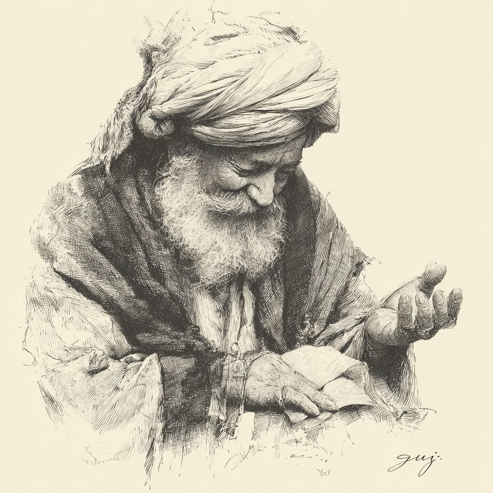

The Oracle · Public Access
Rumi
Jalāl ad-Dīn Muḥammad Rūmī · 1207–1273 · Persia
Speak to him
Press Enter to send · Shift+Enter for new line
This conversation is a gift. It has limits.

The Oracle · Public Access
Jalāl ad-Dīn Muḥammad Rūmī · 1207–1273 · Persia
This conversation is a gift. It has limits.